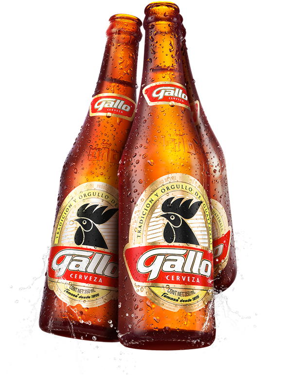
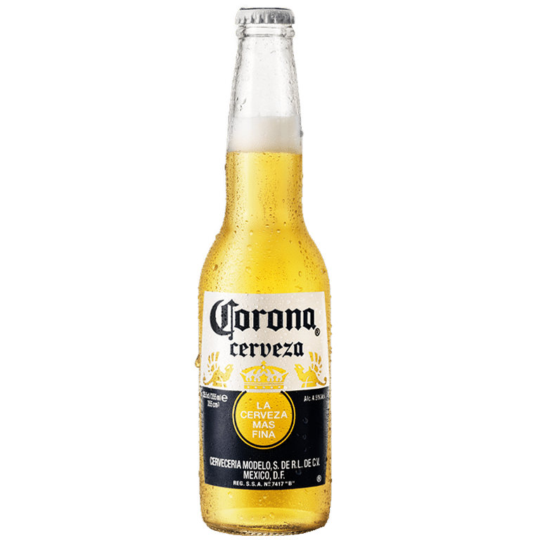

Tipos de Chela

Cerveza Gallo
La cerveza Gallo es una de las más reconocidas y consumidas en Guatemala.
En Santa Lucía Cotzumalguapa es muy común verla en tiendas y celebraciones.
Ver más sobre Gallo
Cerveza Ice
La cerveza Ice se caracteriza por su sabor más suave y refrescante.
Es popular en reuniones entre amigos.
Ver más sobre Ice

Cerveza Corona
Corona es una cerveza mexicana conocida a nivel internacional.
En Santa Lucía se encuentra en supermercados y restaurantes.
Ver más sobre Corona